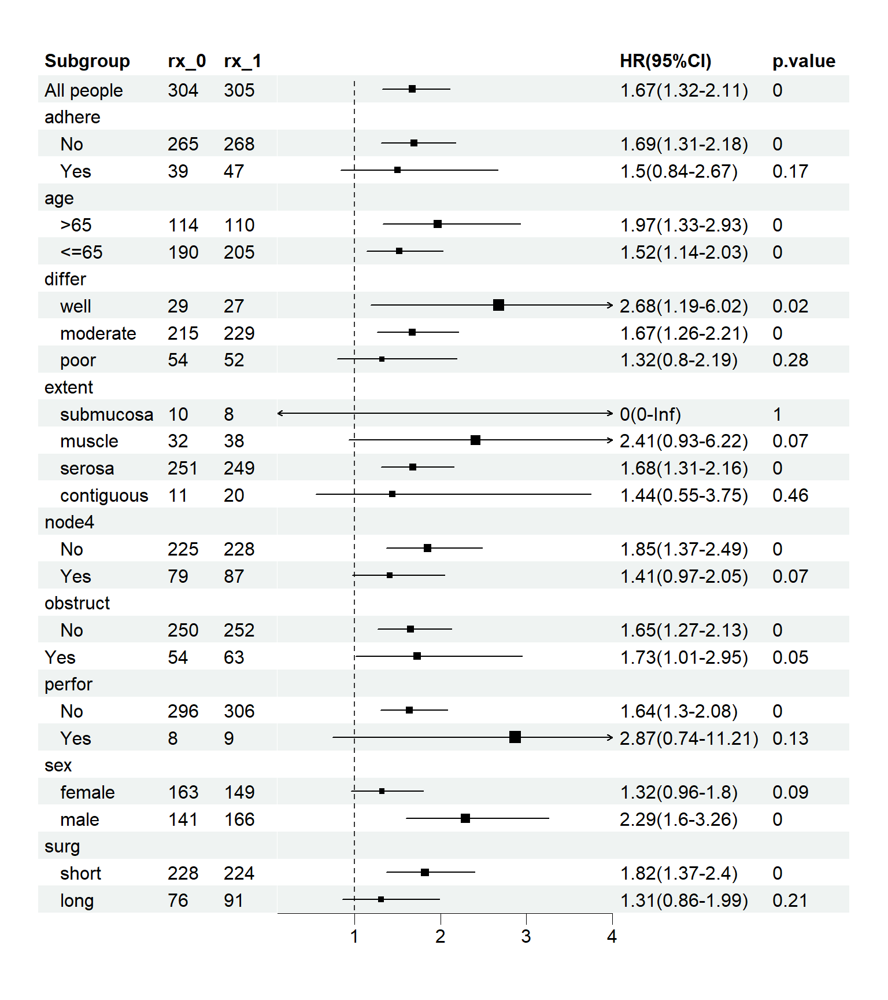

42 R语言亚组分析及森林图绘制
亚组分析的森林图很常见，在各种高分SCI文章中经常见到，其中我最喜欢NEJM的格式，美观，信息量也多。
亚组分析的森林图我们也介绍过很多方法了，其中forestploter画出来的森林图还是最美观的，使用起来也不复杂。
相关推文：
但是咱们之前只是说了有了数据怎么画图，并没有介绍过怎么实现亚组分析，也有好多粉丝在群里问这个问题，所以下面给大家展示下如何实现COX回归分析的亚组分析，其他回归分析也是同理。
并根据结果实现如下样式的森林图：DOI: 10.1056/NEJMoa2206286
42.1 准备数据
使用survival包中的colon数据集用于演示，这是一份关于结肠癌患者的生存数据，共有1858行，16列，共分为3个组，1个观察组+2个治疗组，观察他们发生终点事件的差异。
各变量的解释如下：
- id：患者id
- study：没啥用，所有患者都是1
- rx：治疗方法，共3种，Obs(观察组), Lev(左旋咪唑), Lev+5FU(左旋咪唑+5-FU)
- sex：性别，1是男性
- age：年龄
- obstruct：肠梗阻，1是有
- perfor：肠穿孔，1是有
- adhere：和附近器官粘连，1是有
- nodes：转移的淋巴结数量
- status：生存状态，0代表删失，1代表发生终点事件
- differ：肿瘤分化程度，1-well,2-moderate,3-poor
- extent：局部扩散情况，1-submucosa，2-muscle，3-serosa，4-contiguous structures
- surg：手术后多久了，1-long,2-short
- node4：是否有超过4个阳性淋巴结，1代表是
- time：生存时间
- etype：终点事件类型，1-复发，2-死亡
rm(list = ls())
library(survival)
str(colon)
## 'data.frame': 1858 obs. of 16 variables:
## $ id : num 1 1 2 2 3 3 4 4 5 5 ...
## $ study : num 1 1 1 1 1 1 1 1 1 1 ...
## $ rx : Factor w/ 3 levels "Obs","Lev","Lev+5FU": 3 3 3 3 1 1 3 3 1 1 ...
## $ sex : num 1 1 1 1 0 0 0 0 1 1 ...
## $ age : num 43 43 63 63 71 71 66 66 69 69 ...
## $ obstruct: num 0 0 0 0 0 0 1 1 0 0 ...
## $ perfor : num 0 0 0 0 0 0 0 0 0 0 ...
## $ adhere : num 0 0 0 0 1 1 0 0 0 0 ...
## $ nodes : num 5 5 1 1 7 7 6 6 22 22 ...
## $ status : num 1 1 0 0 1 1 1 1 1 1 ...
## $ differ : num 2 2 2 2 2 2 2 2 2 2 ...
## $ extent : num 3 3 3 3 2 2 3 3 3 3 ...
## $ surg : num 0 0 0 0 0 0 1 1 1 1 ...
## $ node4 : num 1 1 0 0 1 1 1 1 1 1 ...
## $ time : num 1521 968 3087 3087 963 ...
## $ etype : num 2 1 2 1 2 1 2 1 2 1 ...可以使用cox回归探索危险因素。分类变量需要变为因子型，这样在进行回归时会自动进行哑变量设置。
为了演示，我们只选择Obs组和Lev+5FU组的患者，所有的分类变量都变为factor，把年龄也变为分类变量并变成factor。
suppressMessages(library(tidyverse))
## Warning: package 'ggplot2' was built under R version 4.2.3
## Warning: package 'tibble' was built under R version 4.2.3
## Warning: package 'dplyr' was built under R version 4.2.3
df <- colon %>%
mutate(rx=as.numeric(rx)) %>%
filter(etype == 1, !rx == 2) %>% #rx %in% c("Obs","Lev+5FU"),
select(time, status,rx, sex, age,obstruct,perfor,adhere,differ,extent,surg,node4) %>%
mutate(sex=factor(sex, levels=c(0,1),labels=c("female","male")),
age=ifelse(age >65,">65","<=65"),
age=factor(age, levels=c(">65","<=65")),
obstruct=factor(obstruct, levels=c(0,1),labels=c("No","Yes")),
perfor=factor(perfor, levels=c(0,1),labels=c("No","Yes")),
adhere=factor(adhere, levels=c(0,1),labels=c("No","Yes")),
differ=factor(differ, levels=c(1,2,3),labels=c("well","moderate","poor")),
extent=factor(extent, levels=c(1,2,3,4),
labels=c("submucosa","muscle","serosa","contiguous")),
surg=factor(surg, levels=c(0,1),labels=c("short","long")),
node4=factor(node4, levels=c(0,1),labels=c("No","Yes")),
rx=ifelse(rx==3,0,1),
rx=factor(rx,levels=c(0,1))
)
str(df)
## 'data.frame': 619 obs. of 12 variables:
## $ time : num 968 3087 542 245 523 ...
## $ status : num 1 0 1 1 1 1 0 0 0 1 ...
## $ rx : Factor w/ 2 levels "0","1": 1 1 2 1 2 1 2 1 1 2 ...
## $ sex : Factor w/ 2 levels "female","male": 2 2 1 1 2 1 2 1 2 2 ...
## $ age : Factor w/ 2 levels ">65","<=65": 2 2 1 1 1 2 2 1 2 2 ...
## $ obstruct: Factor w/ 2 levels "No","Yes": 1 1 1 2 1 1 1 1 1 1 ...
## $ perfor : Factor w/ 2 levels "No","Yes": 1 1 1 1 1 1 1 1 1 1 ...
## $ adhere : Factor w/ 2 levels "No","Yes": 1 1 2 1 1 1 1 1 1 1 ...
## $ differ : Factor w/ 3 levels "well","moderate",..: 2 2 2 2 2 2 2 2 3 2 ...
## $ extent : Factor w/ 4 levels "submucosa","muscle",..: 3 3 2 3 3 3 3 3 3 3 ...
## $ surg : Factor w/ 2 levels "short","long": 1 1 1 2 2 1 1 2 2 1 ...
## $ node4 : Factor w/ 2 levels "No","Yes": 2 1 2 2 2 2 1 1 1 1 ...42.2 不分亚组的分析
直接使用所有数据，拟合多因素Cox回归模型：
fit <- coxph(Surv(time, status) ~ rx, data = df)
broom::tidy(fit,exponentiate = T,conf.int = T)
## # A tibble: 1 × 7
## term estimate std.error statistic p.value conf.low conf.high
## <chr> <dbl> <dbl> <dbl> <dbl> <dbl> <dbl>
## 1 rx1 1.67 0.119 4.32 0.0000156 1.32 2.11这个结果我们在之前说过无数遍了，各项意义就不做具体解释了。
通过这个结果可以看出，Lev+5FU组是明显好于Obs组的，那么问题来了。
有一个著名的东西叫辛普森悖论，这个方法对所有人有效，但是把这个方法单独对男人或女人使用，就没效了！
这就是由于性别这个混杂因素导致的，控制混杂因素的方法，我们在医学统计系列推文中说过至少3种，今天就给大家演示最好理解的亚组分析。
思路其实很简单，单独在男性患者中拟合模型看看结果是不是和所有患者的结果一样；然后单独在女性患者中也拟合模型。
对于其他的分类变量，都是一样的操作。
所以我说这个方法最简单，没有什么高深的数学理论，只是操作起来比较复杂，因为需要在每个分类变量的每个亚组中分别拟合模型。
刚开始我是想通过嵌套for循环实现的，但是有点费脑子，所以我给大家演示下tidyverse的做法，后期会考虑再写个R包，实现这个功能。
其实我已经找到了一个R包Publish可以实现回归分析的亚组分析，但是它的方法是错误的。。。
通常最笨的方法也是最靠谱的方法，如果你实在不会，也可以手动实现这个过程，就以sex为例，先在male中拟合模型：
fit0 <- coxph(Surv(time, status) ~ rx, data = df[df$sex == "male",])
broom::tidy(fit0,exponentiate = T,conf.int = T)
## # A tibble: 1 × 7
## term estimate std.error statistic p.value conf.low conf.high
## <chr> <dbl> <dbl> <dbl> <dbl> <dbl> <dbl>
## 1 rx1 2.29 0.181 4.57 0.00000495 1.60 3.26然后在female中拟合模型：
fit0 <- coxph(Surv(time, status) ~ rx, data = df[df$sex == "female",])
broom::tidy(fit0,exponentiate = T,conf.int = T)
## # A tibble: 1 × 7
## term estimate std.error statistic p.value conf.low conf.high
## <chr> <dbl> <dbl> <dbl> <dbl> <dbl> <dbl>
## 1 rx1 1.32 0.161 1.71 0.0878 0.960 1.80就这样不断的重复即可，然后把数据手动摘录一下。
42.3 亚组分析
对于先分组，再做某事这种分析思路，tidyverse天生就比较擅长。
以下是tidyverse实现方法，借助purrr。
首先把数据变为长数据，经典的长宽转换：
dfl <- df %>%
pivot_longer(cols = 4:ncol(.),names_to = "var",values_to = "value") %>%
arrange(var)
head(dfl)
## # A tibble: 6 × 5
## time status rx var value
## <dbl> <dbl> <fct> <chr> <fct>
## 1 968 1 0 adhere No
## 2 3087 0 0 adhere No
## 3 542 1 1 adhere Yes
## 4 245 1 0 adhere No
## 5 523 1 1 adhere No
## 6 904 1 0 adhere No根据rx（治疗方式）和var（需要分亚组的变量）分组，分别在每个组内拟合cox回归，并提取结果，一气呵成，这个操作我们在之前的倾向性评分分层中也演示过：倾向性评分回归和分层
ress <- dfl %>%
#group_by(var,value) %>%
group_nest(var,value) %>%
drop_na(value) %>%
mutate(#sample_size=map(data, ~ nrow(.x)),
model=map(data, ~ coxph(Surv(time, status) ~ rx,data = .x)),
res = map(model, broom::tidy,conf.int = T, exponentiate = T)
) %>%
dplyr::select(var,value,res)
## Warning: There was 1 warning in `mutate()`.
## ℹ In argument: `model = map(data, ~coxph(Surv(time, status) ~ rx, data = .x))`.
## Caused by warning in `coxph.fit()`:
## ! Loglik converged before variable 1 ; coefficient may be infinite.
glimpse(ress)
## Rows: 21
## Columns: 3
## $ var <chr> "adhere", "adhere", "age", "age", "differ", "differ", "differ", …
## $ value <fct> No, Yes, >65, <=65, well, moderate, poor, submucosa, muscle, ser…
## $ res <list> [<tbl_df[1 x 7]>], [<tbl_df[1 x 7]>], [<tbl_df[1 x 7]>], [<tbl_…res是列表列，其中每个元素就是我们的结果。
顺便把每个亚组中每种治疗方式的人数也一起计算出来：
ss <- dfl %>%
group_by(var,value,rx) %>%
drop_na(value) %>%
summarise(sample_size=n()) %>%
dplyr::select(var,value,rx,sample_size)
## `summarise()` has grouped output by 'var', 'value'. You can override using the
## `.groups` argument.然后把两个结果合并到一起：
resss <- ress %>%
left_join(ss,b=c("var","value")) %>%
unnest(res,rx,sample_size) %>%
pivot_wider(names_from = "rx",values_from = "sample_size",names_prefix = "rx_") %>%
select(-c(term,std.error,statistic)) %>%
mutate(across(where(is.numeric), round,digits=2)) %>%
mutate(`HR(95%CI)`=paste0(estimate,"(",conf.low,"-",conf.high,")"))
## Warning: `unnest()` has a new interface. See `?unnest` for details.
## ℹ Try `df %>% unnest(c(res, rx, sample_size))`, with `mutate()` if needed.
## Warning: There was 1 warning in `mutate()`.
## ℹ In argument: `across(where(is.numeric), round, digits = 2)`.
## Caused by warning:
## ! The `...` argument of `across()` is deprecated as of dplyr 1.1.0.
## Supply arguments directly to `.fns` through an anonymous function instead.
##
## # Previously
## across(a:b, mean, na.rm = TRUE)
##
## # Now
## across(a:b, \(x) mean(x, na.rm = TRUE))
str(resss)
## tibble [21 × 9] (S3: tbl_df/tbl/data.frame)
## $ var : chr [1:21] "adhere" "adhere" "age" "age" ...
## $ value : Factor w/ 15 levels "female","male",..: 5 6 3 4 7 8 9 10 11 12 ...
## $ estimate : num [1:21] 1.69 1.5 1.97 1.52 2.68 1.67 1.32 0 2.41 1.68 ...
## $ p.value : num [1:21] 0 0.17 0 0 0.02 0 0.28 1 0.07 0 ...
## $ conf.low : num [1:21] 1.31 0.84 1.33 1.14 1.19 1.26 0.8 0 0.93 1.31 ...
## $ conf.high: num [1:21] 2.18 2.67 2.93 2.03 6.02 ...
## $ rx_0 : num [1:21] 265 39 114 190 29 215 54 10 32 251 ...
## $ rx_1 : num [1:21] 268 47 110 205 27 229 52 8 38 249 ...
## $ HR(95%CI): chr [1:21] "1.69(1.31-2.18)" "1.5(0.84-2.67)" "1.97(1.33-2.93)" "1.52(1.14-2.03)" ...
head(resss)
## # A tibble: 6 × 9
## var value estimate p.value conf.low conf.high rx_0 rx_1 `HR(95%CI)`
## <chr> <fct> <dbl> <dbl> <dbl> <dbl> <dbl> <dbl> <chr>
## 1 adhere No 1.69 0 1.31 2.18 265 268 1.69(1.31-2.1…
## 2 adhere Yes 1.5 0.17 0.84 2.67 39 47 1.5(0.84-2.67)
## 3 age >65 1.97 0 1.33 2.93 114 110 1.97(1.33-2.9…
## 4 age <=65 1.52 0 1.14 2.03 190 205 1.52(1.14-2.0…
## 5 differ well 2.68 0.02 1.19 6.02 29 27 2.68(1.19-6.0…
## 6 differ moderate 1.67 0 1.26 2.21 215 229 1.67(1.26-2.2…这样亚组分析就做好了，HR，可信区间，P值，每个组的人数都有了，还记得前面做的整体的结果吗，我们把它合并进来，方便后面画森林图用。
fit <- coxph(Surv(time, status) ~ rx, data = df)
res_all <- broom::tidy(fit,exponentiate = T,conf.int = T)
#看下不同治疗组的人数
df %>% count(rx)
## rx n
## 1 0 304
## 2 1 315
res_all <- res_all %>%
mutate(var="All people",
value=" ",
rx_0=304,
rx_1=305,
across(where(is.numeric), round,digits=2)
) %>%
mutate(`HR(95%CI)`=paste0(estimate,"(",conf.low,"-",conf.high,")")
) %>%
select(var,value,estimate,p.value,conf.low,conf.high,rx_0,rx_1,`HR(95%CI)`)
res_all
## # A tibble: 1 × 9
## var value estimate p.value conf.low conf.high rx_0 rx_1 `HR(95%CI)`
## <chr> <chr> <dbl> <dbl> <dbl> <dbl> <dbl> <dbl> <chr>
## 1 All people " " 1.67 0 1.32 2.11 304 305 1.67(1.32-2.…合并到一起：
resss <- bind_rows(res_all,resss)
head(resss)
## # A tibble: 6 × 9
## var value estimate p.value conf.low conf.high rx_0 rx_1 `HR(95%CI)`
## <chr> <chr> <dbl> <dbl> <dbl> <dbl> <dbl> <dbl> <chr>
## 1 All people " " 1.67 0 1.32 2.11 304 305 1.67(1.32-2…
## 2 adhere "No" 1.69 0 1.31 2.18 265 268 1.69(1.31-2…
## 3 adhere "Yes" 1.5 0.17 0.84 2.67 39 47 1.5(0.84-2.…
## 4 age ">65" 1.97 0 1.33 2.93 114 110 1.97(1.33-2…
## 5 age "<=65" 1.52 0 1.14 2.03 190 205 1.52(1.14-2…
## 6 differ "well" 2.68 0.02 1.19 6.02 29 27 2.68(1.19-6…到这里所有数据就都准备好了！下面只要整理下格式，画图即可。
但是forestploter包画森林图的格式还是蛮复杂的，所以我们直接另存为csv，用excel修改好，再读进来。
write.csv(resss, file = "resss.csv",quote = F,row.names = T)42.4 画森林图
把数据整理成这样：

还有一些细节你可以自己修改下，比如各个亚组的顺序，首字母大写，各个变体的大小写，分组变量的名字，把P值为0的改成<0.0001，等。我就不改了
然后读取进来：
plot_df <- read.csv(file = "datasets/resss.csv",check.names = F)
plot_df
## Subgroup estimate p.value conf.low conf.high rx_0 rx_1 HR(95%CI)
## 1 All people 1.67 0.00 1.32 2.11 304 305 1.67(1.32-2.11)
## 2 adhere NA NA NA NA NA NA
## 3 No 1.69 0.00 1.31 2.18 265 268 1.69(1.31-2.18)
## 4 Yes 1.50 0.17 0.84 2.67 39 47 1.5(0.84-2.67)
## 5 age NA NA NA NA NA NA
## 6 >65 1.97 0.00 1.33 2.93 114 110 1.97(1.33-2.93)
## 7 <=65 1.52 0.00 1.14 2.03 190 205 1.52(1.14-2.03)
## 8 differ NA NA NA NA NA NA
## 9 well 2.68 0.02 1.19 6.02 29 27 2.68(1.19-6.02)
## 10 moderate 1.67 0.00 1.26 2.21 215 229 1.67(1.26-2.21)
## 11 poor 1.32 0.28 0.80 2.19 54 52 1.32(0.8-2.19)
## 12 extent NA NA NA NA NA NA
## 13 submucosa 0.00 1.00 0.00 Inf 10 8 0(0-Inf)
## 14 muscle 2.41 0.07 0.93 6.22 32 38 2.41(0.93-6.22)
## 15 serosa 1.68 0.00 1.31 2.16 251 249 1.68(1.31-2.16)
## 16 contiguous 1.44 0.46 0.55 3.75 11 20 1.44(0.55-3.75)
## 17 node4 NA NA NA NA NA NA
## 18 No 1.85 0.00 1.37 2.49 225 228 1.85(1.37-2.49)
## 19 Yes 1.41 0.07 0.97 2.05 79 87 1.41(0.97-2.05)
## 20 obstruct NA NA NA NA NA NA
## 21 No 1.65 0.00 1.27 2.13 250 252 1.65(1.27-2.13)
## 22 Yes 1.73 0.05 1.01 2.95 54 63 1.73(1.01-2.95)
## 23 perfor NA NA NA NA NA NA
## 24 No 1.64 0.00 1.30 2.08 296 306 1.64(1.3-2.08)
## 25 Yes 2.87 0.13 0.74 11.21 8 9 2.87(0.74-11.21)
## 26 sex NA NA NA NA NA NA
## 27 female 1.32 0.09 0.96 1.80 163 149 1.32(0.96-1.8)
## 28 male 2.29 0.00 1.60 3.26 141 166 2.29(1.6-3.26)
## 29 surg NA NA NA NA NA NA
## 30 short 1.82 0.00 1.37 2.40 228 224 1.82(1.37-2.4)
## 31 long 1.31 0.21 0.86 1.99 76 91 1.31(0.86-1.99)把数据中的说明部分的NA变成空格，这样画森林图时就不会显示了，然后增加1列空值用于展示可信区间：
plot_df[,c(3,6,7)][is.na(plot_df[,c(3,6,7)])] <- " "
plot_df$` ` <- paste(rep(" ", nrow(plot_df)), collapse = " ")
plot_df
## Subgroup estimate p.value conf.low conf.high rx_0 rx_1 HR(95%CI)
## 1 All people 1.67 0 1.32 2.11 304 305 1.67(1.32-2.11)
## 2 adhere NA NA NA
## 3 No 1.69 0 1.31 2.18 265 268 1.69(1.31-2.18)
## 4 Yes 1.50 0.17 0.84 2.67 39 47 1.5(0.84-2.67)
## 5 age NA NA NA
## 6 >65 1.97 0 1.33 2.93 114 110 1.97(1.33-2.93)
## 7 <=65 1.52 0 1.14 2.03 190 205 1.52(1.14-2.03)
## 8 differ NA NA NA
## 9 well 2.68 0.02 1.19 6.02 29 27 2.68(1.19-6.02)
## 10 moderate 1.67 0 1.26 2.21 215 229 1.67(1.26-2.21)
## 11 poor 1.32 0.28 0.80 2.19 54 52 1.32(0.8-2.19)
## 12 extent NA NA NA
## 13 submucosa 0.00 1 0.00 Inf 10 8 0(0-Inf)
## 14 muscle 2.41 0.07 0.93 6.22 32 38 2.41(0.93-6.22)
## 15 serosa 1.68 0 1.31 2.16 251 249 1.68(1.31-2.16)
## 16 contiguous 1.44 0.46 0.55 3.75 11 20 1.44(0.55-3.75)
## 17 node4 NA NA NA
## 18 No 1.85 0 1.37 2.49 225 228 1.85(1.37-2.49)
## 19 Yes 1.41 0.07 0.97 2.05 79 87 1.41(0.97-2.05)
## 20 obstruct NA NA NA
## 21 No 1.65 0 1.27 2.13 250 252 1.65(1.27-2.13)
## 22 Yes 1.73 0.05 1.01 2.95 54 63 1.73(1.01-2.95)
## 23 perfor NA NA NA
## 24 No 1.64 0 1.30 2.08 296 306 1.64(1.3-2.08)
## 25 Yes 2.87 0.13 0.74 11.21 8 9 2.87(0.74-11.21)
## 26 sex NA NA NA
## 27 female 1.32 0.09 0.96 1.80 163 149 1.32(0.96-1.8)
## 28 male 2.29 0 1.60 3.26 141 166 2.29(1.6-3.26)
## 29 surg NA NA NA
## 30 short 1.82 0 1.37 2.40 228 224 1.82(1.37-2.4)
## 31 long 1.31 0.21 0.86 1.99 76 91 1.31(0.86-1.99)
##
## 1
## 2
## 3
## 4
## 5
## 6
## 7
## 8
## 9
## 10
## 11
## 12
## 13
## 14
## 15
## 16
## 17
## 18
## 19
## 20
## 21
## 22
## 23
## 24
## 25
## 26
## 27
## 28
## 29
## 30
## 31然后画图即可，默认的出图就已经很美观了，但是大家要注意，这里每个组的人数和开头那张图的每个组的人数稍有不同哦~
library(forestploter)
## Warning: package 'forestploter' was built under R version 4.2.3
library(grid)
p <- forest(
data = plot_df[,c(1,6,7,9,8,3)],
lower = plot_df$conf.low,
upper = plot_df$conf.high,
est = plot_df$estimate,
ci_column = 4,
sizes = (plot_df$estimate+0.001)*0.3,
ref_line = 1,
xlim = c(0.1,4)
)
print(p)
如果你还需要美化，我们在之前也详细介绍过这个包的使用细节了：
下面是我们美化后的森林图，其实变化不是非常大，只要数据好，默认的图形也很好看：

和开头那张NEJM的风格一模一样！
pdf("aaa.pdf",width = 8,height = 10)
tm <- forest_theme(base_size = 12, # 基础大小
# 可信区间点的形状，线型、颜色、宽度
#ci_lty = 1,
ci_lwd = 1.5,
#ci_Theight = 0.2, # 可信区间两端加短竖线
# 参考线宽度、形状、颜色
refline_lwd = 1.5,
refline_lty = "dashed",
refline_col = "grey20",
# 汇总菱形的填充色和边框色
#summary_fill = "#4575b4",
#summary_col = "#4575b4",
# 脚注大小、字体、颜色
footnote_cex = 0.8,
footnote_fontface = "italic",
footnote_col = "grey30",
# 自定义背景色、前景色。fontface:1常规，2粗体，3斜体，4粗斜体
core = list(bg_params = list(fill = c("#FFFFFF","#f5f7f6"), col=NA))
)
p <- forest(
data = plot_df[,c(1,6,7,9,8,3)],
lower = plot_df$conf.low,
upper = plot_df$conf.high,
est = plot_df$estimate,
ci_column = 4,
sizes = (plot_df$estimate+0.001)*0.3, # 不能是负值或NA，而且不能太大
ref_line = 1, # 把竖线放到1的位置
xlim = c(0.1,4), # x轴范围,如果有的可信区间超过这个范围会显示为箭头
arrow_lab = c("Obs better","Lev+5-FU better"), # x轴下面的文字
theme = tm
)
print(p)
dev.off()